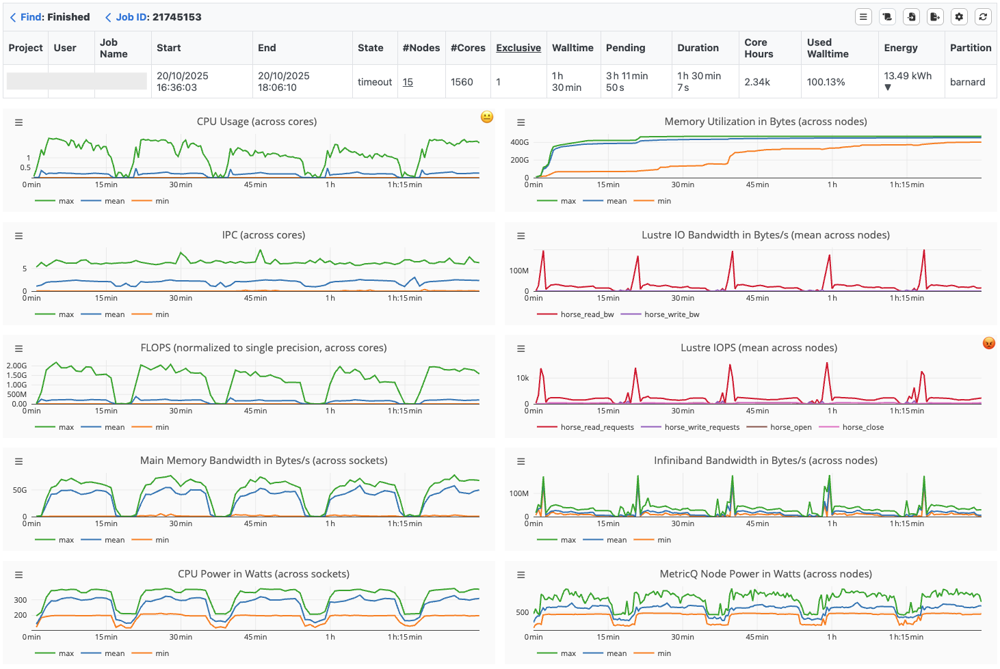
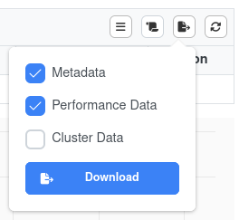
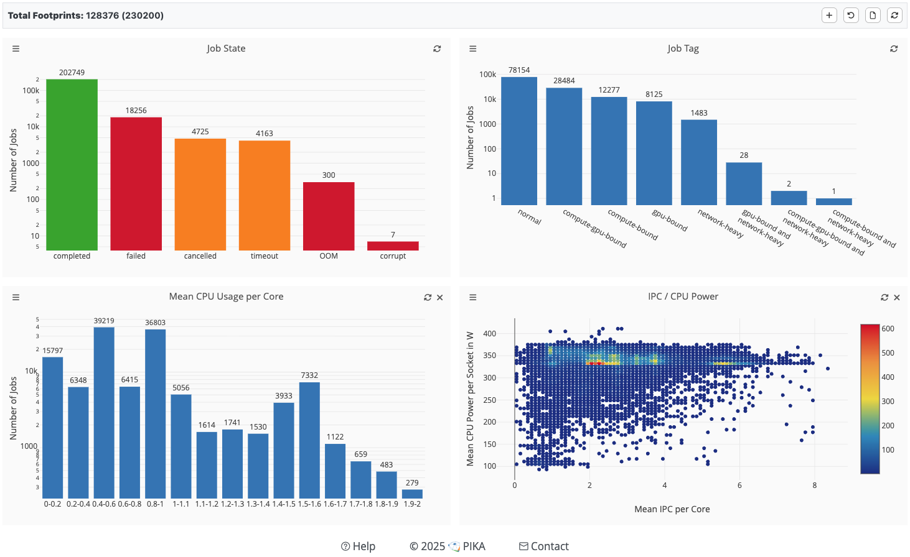
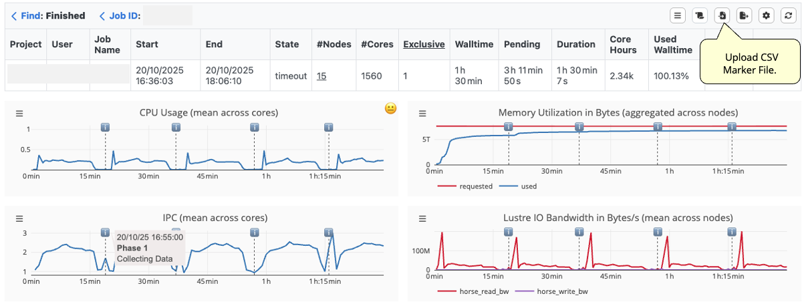
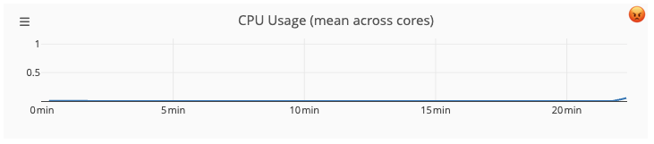
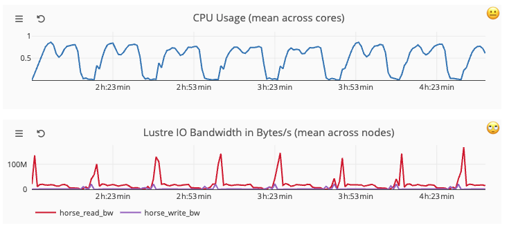
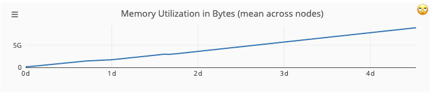

Track Slurm Jobs with PIKA#
PIKA is a hardware performance monitoring stack to identify inefficient HPC jobs. Users of ZIH systems have the possibility to visualize and analyze the efficiency of their jobs via the PIKA web interface.
!!! hint
To understand this guide, it is recommended that you open the
[web interface](https://pika.zih.tu-dresden.de)
in a separate window. Furthermore, you should have submitted at least one real HPC job at ZIH
systems.
Overview#
PIKA consists of several components and tools. It uses the collection daemon collectd, InfluxDB to store time-series data and MariaDB to store job metadata. Furthermore, it provides a powerful web interface for the visualization and analysis of job performance data.
Access Roles#
PIKA offers three types of access roles: User, PI, and Admin.
By default, the highest available role is selected upon login. If you have access to multiple roles, you can switch between them by clicking your username in the top-right corner. The browser will remember your last selected role for future sessions.
While Users can only view their own jobs, PIs have access to all jobs within their projects, enabling them to generate and analyze statistics across the entire project scope.
Admins have full insight and can see all jobs across the entire HPC cluster.
Table View and Job Search#
The analysis of HPC jobs in PIKA is designed as a top-down approach. Starting from the table view, you can either analyze running or completed jobs. You can navigate from groups of jobs with the same name to the metadata of an individual job and finally investigate the job’s runtime metrics in a timeline view.
To find jobs with specific properties, you can sort the table by any column, e.g., by consumed CPU hours to find jobs where an optimization has a large impact on the system utilization. Additionally, jobs can also be located by specifying the Job ID in the “Find” tab, or by creating a global filter that is applied across all PIKA visualizations. When a job has been selected, the timeline view opens.
Timeline Visualization#
PIKA provides timeline charts to visualize the resource utilization of a job over time. After a job is completed, timeline charts can help you to identify periods of inefficient resource usage. However, they are also suitable for the live assessment of performance during the job’s runtime. In case of unexpected performance behavior, you can cancel the job, thus avoiding long execution with subpar performance.
The following timeline visualization shows a job with 1560 cores, spread over 15 Barnard nodes that have been allocated for exclusive use.

{: align=”center”}Runtime Metrics#
PIKA provides the following runtime metrics:
Metric |
Hardware Unit |
Sampling Frequency |
|---|---|---|
CPU Usage |
CPU core (average across hardware threads) |
30s |
IPC (instructions per cycle) |
CPU core (sum over hardware threads) |
60s |
FLOPS (normalized to single precision) |
CPU core (sum over hardware threads) |
60s |
Main Memory Bandwidth |
CPU socket |
60s |
CPU Power |
CPU socket |
60s |
Main Memory Utilization |
node |
30s |
I/O Bandwidth (local, Lustre) |
node |
30s |
I/O Metadata (local, Lustre) |
node |
30s |
Network Bandwidth |
node |
30s |
GPU Usage |
GPU device |
30s |
GPU Memory Utilization |
GPU device |
30s |
GPU Power Consumption |
GPU device |
30s |
GPU Temperature |
GPU device |
30s |
Each monitored metric is represented by a timeline, whereby metrics with the same unit and data source are displayed in a common chart, e.g., different Lustre metadata operations. Each metric is measured with a certain granularity concerning the hardware, e.g. per hardware thread, per CPU socket or per node. Most metrics are recorded every 30 seconds except IPC, FLOPS, Main Memory Bandwidth and Power Consumption. The latter are determined every 60 seconds, as they are a combination of different hardware counters, which leads to a higher measurement overhead. Depending on the architecture, metrics such as normalized FLOPS (2 x double-precision + 1 x single-precision) can require multiplexing, since single and double precision FLOPS cannot be measured simultaneously. The sampling frequency cannot be changed by the user.
!!! hint
Be aware that CPU socket or node metrics can share the resources of other jobs running on the
same CPU socket or node. This can result e.g., in cache perturbation and thus a sub-optimal
performance. To get valid performance data for those metrics, it is recommended to submit an
exclusive job (`--exclusive`)!
CPU usage and Simultaneous Multithreading (SMT)#
The CPU feature called Simultaneous Multithreading (SMT) is hidden on ZIH systems due to performance reasons. PIKA will show CPU usage values greater 1.0 if jobs use SMT nonetheless.
Visualization Modes#
The following table explains different timeline visualization modes. By default, each timeline shows the average value over all hardware units (HUs) per measured interval.
Visualization Mode |
Description |
|---|---|
Maximum |
maximal value across all HUs per measured interval |
Mean |
mean value across all HUs per measured interval |
Minimum |
minimal value across all HUs per measured interval |
Mean + Standard Deviation |
mean value across all HUs including standard deviation per measured interval |
Best |
best average HU over time |
Lowest |
lowest average HU over time |
The visualization modes Maximum, Mean, and Minimum reveal the range in the utilization of individual HUs per measured interval. A high deviation of the extrema from the mean value is a reason for further investigation, since not all HUs are equally utilized.
To identify imbalances between HUs over time, the visualization modes Best and Lowest are a first indicator how much the HUs differ in terms of resource usage. The timelines Best and Lowest show the recorded performance data of the best/lowest average HU over time.
Download Job Data#
If you want to conduct further analysis, you can download the job data as json-file(s) via the button in the top right section:

{ align=left}
The options are
Metadata: Data shown in table (project, start, end, …), job-script, min/max/mean statistics
Performance Data: Data records of all metrics of every distinct device (CPU cores, GPUs, …)
Cluster Data: Metadata of used partition
??? example “Example: Visualize every CPU core that was allocated for the Job”
```python
#in JupyterLab/Jupyter Notebook, using pandas and matplotlib
#download the "Performance Data" and save as "jobdata.json"
%pylab widget
from pandas import read_json
data = read_json('/tmp/jobdata.json', lines=True)
for cpu in data['cpu_used'][0]['core']['series']:
plot(cpu['data'], lw=0.5)
```
Footprint Visualization#
Complementary to the timeline visualization of one specific job, statistics on metadata and footprints over multiple jobs or a group of jobs with the same name can be displayed with the footprint view. The performance footprint is a set of summarized run-time metrics that is generated from the time series data for each job. To limit the jobs displayed, a time period can be specified.
To analyze the footprints of a larger number of jobs, a visualization with histograms and scatter plots can be used. PIKA uses histograms to illustrate the number of jobs that fit into a category or bin. For job states and job tags there is a fixed number of categories or values. For other footprint metrics PIKA uses a binning with a user-configurable bin size, since the value range usually contains an unlimited number of values. A scatter plot enables the combined view of two footprint metrics (except for job states and job tags), which is particularly useful for investigating their correlation.

{: align=”center”}Energy Efficiency Analysis#
As part of its daily post-processing, PIKA also calculates the energy consumption of each job in kWh, as well as its energy efficiency in GFLOPS/W. These values are displayed alongside the job data in the timeline view. Additionally, the footprint view allows you to visualize energy consumption or energy efficiency across multiple jobs in the form of a histogram or scatter plot.
Note: Energy efficiency is calculated based on the measured CPU FLOPS. Unfortunately, we are currently unable to determine GPU FLOPS, so for jobs running on our GPU equipped clusters, the energy efficiency reflects only the CPU FLOPS.
Marker API#
The Marker API allows users to insert timestamped markers and supplementary information directly from their application’s source code during job execution, supporting in-depth analysis of individual phases within the job execution. The markers are collected in a CSV file, which can be imported into the timeline view for further inspection.
The graphic below illustrates the import of a marker file. Each timeline metric displays these markers, and hovering over them reveals additional information.

{: align=”center”}Hints#
Disable Monitoring#
If you wish to perform your own measurement of performance counters using performance tools other than PIKA, it is recommended to disable PIKA monitoring. This can be done using the following Slurm flags in the job script:
#SBATCH --exclusive
#SBATCH --constraint=no_monitoring
Note: Disabling PIKA monitoring is only possible for exclusive jobs and only affects runtime metrics. The Slurm metadata is still recorded.
Case Studies#
Idle CPUs#
CPU usage remains close to zero over time.

{: align=”center”}Blocking I/O Operations#
Read operations result on lower CPU usage.

{: align=”center”}Memory Leaks#
The linear increase in memory usage could indicate a memory leak.

{: align=”center”}